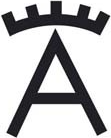

2
Sábado
Castilla La Mancha Media
(18:00)
Ver corrida de toros
Daimiel (Ciudad Real)

Toros de
Victorino
Procedencia Marqués de Albaserrada
Rafaelillo
Curro Díaz
Sergio Serrano
Canal Extremadura
(21:00)
Ver novillada sin picadores
Azuaga (Badajoz)
XI Ciclo de Novilladas de la
Diputación de Badajoz
Novillos
de Guadalest
Procedencia D. Carlos Núñez y Torrestrella
Lenny Martins
Bruno Jimeno
Tomás Bastos
 Castilla La Mancha Media Castilla La Mancha Media
Castilla La Mancha Media Castilla La Mancha Media  Ver corrida de toros
Ver corrida de toros

 Canal ExtremaduraVer novillada sin picadores
Canal ExtremaduraVer novillada sin picadores